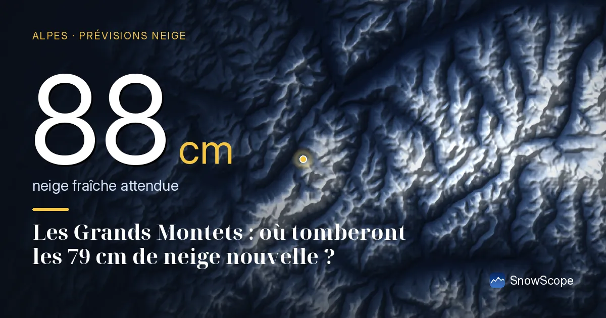

Les Grands Montets : où tomberont les 79 cm de neige nouvelle ?
Où tomberont les 79 centimètres de neige nouvelle aux Grands Montets ? L'essentiel s'accumulera au-dessus de 2 000 mètres, et lundi 17 novembre apportera les plus fortes chutes avec 38 centimètres.
Consultez les prévisions neige en temps réel pour Les Grands Montets sur l'application SnowScopeHauteurs de neige, alertes poudreuse et carte 3D, gratuitement.
Trois jours de neige en montagne
Trois jours de chutes de neige significatives arrivent dans les Alpes. Aux Grands Montets, notre modèle prévoit 79 centimètres d'ici la soirée du 18 novembre. Plus au sud, à Courmayeur, la même tempête apporte 88 centimètres, ce qui en fait la montagne la plus arrosée de la chaîne en ce moment. L'écart entre ces chiffres provient en partie de la position exacte de la limite de neige chaque jour.
La prévision inclut un mélange de pluie et neige en moyenne altitude, donc l'incertitude est réelle. La fourchette aux Grands Montets est de 73 à 79 centimètres selon la façon dont le profil de température s'établit. En montagne, cette différence compte : plus de pluie signifie une neige plus lourde et humide qui se tasse plus vite et augmente le risque d'avalanche sur les pentes raides.
| Station | Hauteur de neige | Neige fraîche, 72 h | Attendu, jours suivants | Sommet |
|---|---|---|---|---|
| Courmayeur | 28 cm | 19 cm | 88 cm | 2 749 m |
| Les Grands Montets | 39 cm | 16 cm | 79 cm | 2 768 m |
| La Thuile ski | 36 cm | 15 cm | 78 cm | 2 608 m |
| Les Arcs | 41 cm | 17 cm | 77 cm | 3 205 m |
| Orelle | 81 cm | 27 cm | 77 cm | 3 221 m |

L'altitude décide ce qui tombe et ce qui reste
Dans la prévision nivale en montagne, l'altitude est tout. Aux Grands Montets, le sommet à 2 768 mètres recevra environ 114 centimètres sur les sept prochains jours, ce qui s'ajoute considérablement aux 39 centimètres déjà mesurés sur les pentes supérieures. À moyenne altitude autour de 2 000 mètres, la prévision baisse à 73 centimètres. À la base à 1 234 mètres, presque rien ne tient, seulement 4 centimètres modélisés.
La limite de neige est marquée à 1 980 mètres. Au-dessous de cette altitude, un mélange de pluie et neige est prévu, ce qui signifie des bases humides et un tassement plus rapide. Au-dessus, la neige propre s'accumulera et persistera. C'est la raison fondamentale pour laquelle les domaines skiables en haute altitude ont un avantage en novembre : ils sont au-dessus de la limite de pluie et captent la neige qui tombe sous forme de neige.
Lundi, le jour clé
La répartition est inégale sur les trois jours. Dimanche 16 novembre débute en douceur avec 11 centimètres. Lundi 17 novembre est le moment fort, apportant 38 centimètres, soit plus de la moitié du total. Mardi 18 novembre se termine avec 30 centimètres. Planifiez vos journées en conséquence.
Surveillez la limite de congélation : le lundi, elle devrait monter à 3 010 mètres, le plus haut des trois jours. Cela signifie que même les hauts sommets verront un peu de pluie se mélanger à la neige pendant ce jour de pic. D'ici mardi, la limite de congélation redescend à 2 220 mètres, donc la transition neige-pluie devient plus nette.
Ce que signifie un mélange pluie-neige
La prévision dit « mixte » parce que la pluie et la neige tomberont à des altitudes différentes les mêmes jours. Cela compte pour deux raisons pratiques. D'abord, les bases humides à basse altitude peuvent se déstabiliser sous le poids de la neige nouvelle, donc consultez le bulletin officiel d'avalanche, les Grands Montets affichent un niveau de danger 3 aujourd'hui, et cela peut changer à l'arrivée de la neige nouvelle. Deuxièmement, la profondeur réelle à la base sera moins impressionnante que le chiffre total ne le laisserait croire.
Les données d'une station proche au Glacier de l'Evole (2 800 mètres, 9,6 kilomètres de distance) ont enregistré 39 centimètres de neige le 12 novembre, confirmant que la zone haute s'accumule régulièrement. Au 18 novembre, ce secteur aura beaucoup plus.
Où skier selon l'altitude
Si vous allez aux Grands Montets dans les prochains jours, montez en altitude. Les pentes moyennes autour de 2 000 mètres auront des traces fraîches et 73 centimètres de neige nouvelle. Les pistes supérieures près de 2 768 mètres seront encore mieux, avec 114 centimètres attendus. Les pentes basses seront plus minces et humides, 4 centimètres, ce n'est pas grand-chose, et elles risquent d'être encore humides.
Si vous vous aventurez hors-piste, la neige nouvelle sur les pentes raides risque de dévaler. Le meilleur ski sera dans les hauts cirques et crêtes où s'accumule la neige la plus épaisse et la plus froide et où le soleil arrive en dernier. Planifiez votre journée pour l'altitude où la neige promet d'être la plus abondante.
Conseils aux skieurs
- Dirigez-vous vers les altitudes au-dessus de 2 000 mètres le lundi 17 novembre pour les plus fortes chutes. Ce jour apportera 38 centimètres, quand les pentes moyennes seront les plus fraîches.
- Consultez le bulletin officiel d'avalanche, le danger est au niveau 3 aujourd'hui, et la neige nouvelle sur les pentes raides augmente le risque. Ne vous aventurez pas hors-piste sans conseil sur les conditions du jour.
- Prévoyez un mélange de pluie et neige en dessous de 1 980 mètres d'altitude. Les pentes supérieures offriront une meilleure qualité de neige ; concentrez votre journée sur le terrain au-dessus de 2 000 mètres.
- Si vous skiez mardi ou plus tard, une neige plus profonde vous attend, mais un peu de fonte peut se produire à basse altitude du fait de l'air doux. Allez vers les hauteurs et partez tôt le matin.
- Les pentes basses à 1 234 mètres risquent d'être encore minces ou humides. Choisissez vos pistes sur le terrain des pentes moyennes et supérieures pour profiter au mieux de la neige nouvelle.
À propos de ces chiffres
Les hauteurs de neige des stations sont la neige la plus épaisse sur le haut du domaine, d'après le modèle de neige SnowScope (environ 1 km, calcul du 15 novembre) ; ce sont des estimations pour une zone, pas une mesure en un point. Les valeurs des stations de mesure sont mesurées à la date indiquée. Les prévisions peuvent changer. Consultez toujours le bulletin d'avalanche officiel avant le hors-piste.
Bulletins d'avalanche officiels: Météo-France BERA
Citer ce bulletin
Pour la recherche, l'enseignement ou la presse : chiffres et graphiques réutilisables librement sous CC BY 4.0 avec cette citation.
SnowScope (2026), Les Grands Montets : où tomberont les 79 cm de neige nouvelle ?, https://snowscope.app/blog/fr/2026/11/alps-les-grands-montets-snow-forecast-15-november-2026.html, consulté le 2026-11-15
SnowScope (Atlas Labs). (2026, November 15). Les Grands Montets : où tomberont les 79 cm de neige nouvelle ?. SnowScope snow reports. https://snowscope.app/blog/fr/2026/11/alps-les-grands-montets-snow-forecast-15-november-2026.html
BibTeX
@misc{snowscope2026alpslesgrandsmontetssnow,
author = {{SnowScope (Atlas Labs)}},
title = {Les Grands Montets : où tomberont les 79 cm de neige nouvelle ?},
year = {2026},
month = nov,
howpublished = {\url{https://snowscope.app/blog/fr/2026/11/alps-les-grands-montets-snow-forecast-15-november-2026.html}},
note = {Published 2026-11-15 17:59 UTC; accessed 2026-11-15}
}· CC BY 4.0 · Méthodes, données et outils →
Les Grands Montets : neige et température selon l'altitude, cet hiver vs l'hiver dernier (outils) →
Suivre Les Grands Montets
Gratuit : un message quand la neige arrive, et la météo chaque matin.
Autres bulletins neige

Bulletin neige dans les Alpes, 18 novembre. Nous avons pesé la neige déjà au sol, la neige fraîche des 72 dernières heures et ce qu'ajoute la …

Sur 46 hivers, les stations du versant italien et des Alpes du Sud françaises ont connu 24 fois un hiver relativement plus généreux que le versant nord. Le graphique, les grandes années et la météo qui les explique.

Les Grands Montets ont enregistré 74 cm de neige fraîche ces dernières 72 heures, avec d'autres chutes prévues pour les jours à venir, selon notre modèle au 17 novembre 2026.